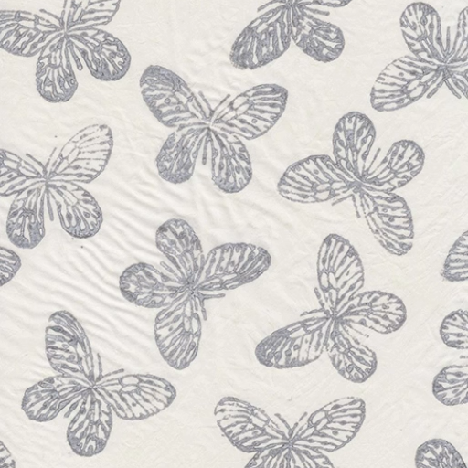

KAYAL
Overview
MARCH 2023
Stable Diffusion, TouchDesigner, Adobe After Effects
Kayal is a sustainable fashion brand from Pakistan that draws inspiration from South Asian cultural
influences and emphasizes a connection to nature through their clothing.
The goal of our collaboration was to merge Kayal's traditional block print designs with technology through
AI animations. Using prompts like "flowers", "birds" and "nature", Stable Diffusion was able to transform
the static block prints and bring the designs to life.
These animations served to emphasize the brand's commitment to sustainability and a profound connection to
nature, while also highlighting how technology can elevate and complement traditional craftsmanship in the
realm of sustainable fashion.
